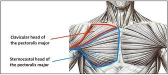

대흉근이란..?
대흉근은 우리가 흔히 아는 가슴 일명 "갑빠"로 잘 알려진 근육이다.

위치와 모양은 다음과 같이 쇄골 안쪽과 흉골의 갈비연골에서 부터 상완이두근의 가쪽 모서리로 이어져 있는 구조이다.
대흉근의 기능으로는 어깨관절 움직임을 주로 담당하는 네 가지 동작이 존재한다.
▶상완골 굴곡(flexion), 언더핸드로 공던지기, 물건 들어올리기에 사용
▶상완골 내전(adduction), 팔을 펄럭거릴 때 사용
▶상완골 내회전(medial rotation), 팔씨름 시에 사용
▶두팔이 몸통에 부착되게 하는 기능
이렇게 대흉근은 다양한 일을 하는 근육이다.
이러한 대흉근을 운동하기 위해서는 어떤 운동이 있을까? 그에 대한 답변을 위해 유튜브
지기TV의 영상에서 정보를 가져왔다.
대흉근의 기능, 생김새, 그리고 위치에 대해서 간단하게 살펴보고 그에 대한 운동법에 대해서 알아보았으니 앞으로 스스로 열심히 운동하기를 바란다.
하지만 어떤운동이던 제대로된 자세와 주의가 함께 해야 부상을 예방할 수 있으니 항상 주의를 하기를 바란다.